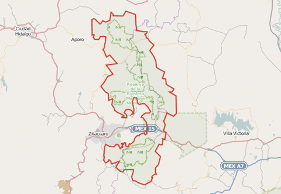

- Map me 
There is currently very little data available in Open Street Map activity within protected areas. By adding features such as roads and buildings, to this important areas we can enrich a dataset that will help inform action towards safeguarding key habitats and ecosystem. Learn more